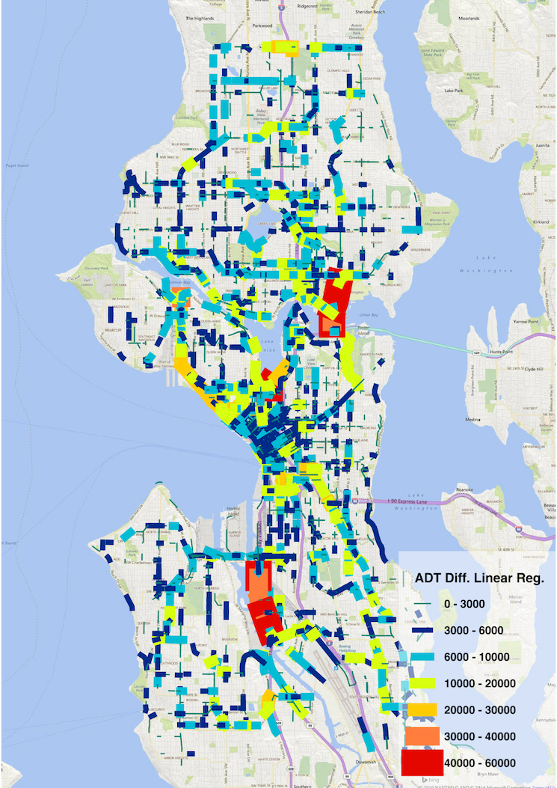
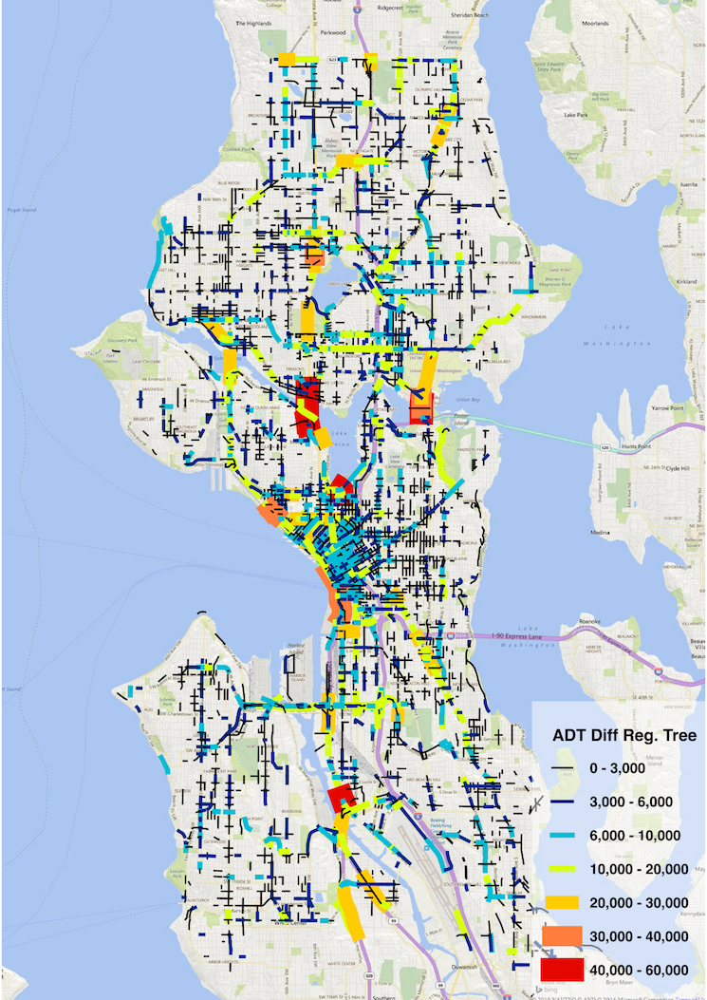
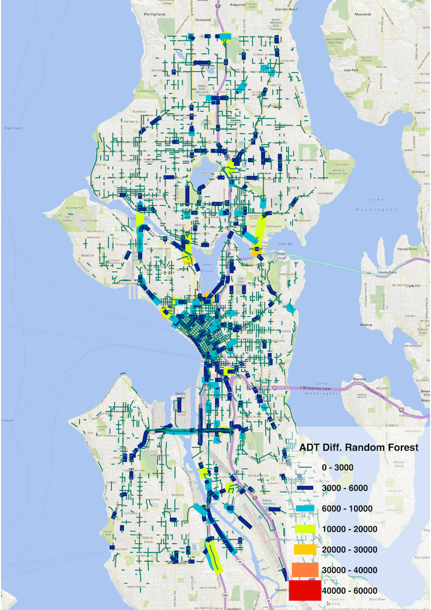

Seattle Data Dive Objective 1 Results
Demo Days:
Demo Day 2
Observed ADT vs. Linear Regression Predictions

Observed ADT vs. Regression Tree Predictions

Observed ADT vs. Random Forest Predictions
